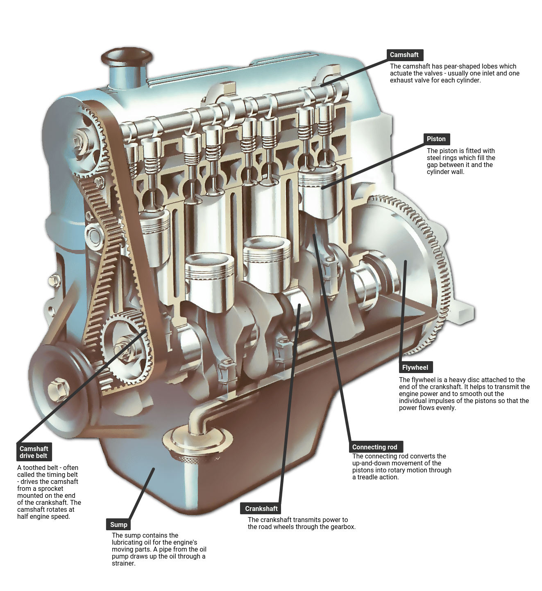

Home
DIY
Contact & About
Info
There are many parts of a car that make it comfortable and safe to use. However, when it comes to what makes the car run the main component is the engine. Think of the engine as the heart of the car, that pumps and pushes the energy to the wheels or the legs of a car. The engine it self has many different parts as well, but when it comes to issues with in the engine there are a few main parts to consider, the camshaft, the crankshaft, the piston and connecting rod, and the fly wheel.
to give a breaf dicription of each the camshaft is the part that tells the valves to open and close which allows air, and fuel to enter the piston chamber. The Piston is a metal head that will transfer the energy created by an explosion in the chamber to the connecting rod. Then to the crankshaft, and then to the flywheel. To help give a visual representation of what the inside of a engine looks like I have added a picture below.
